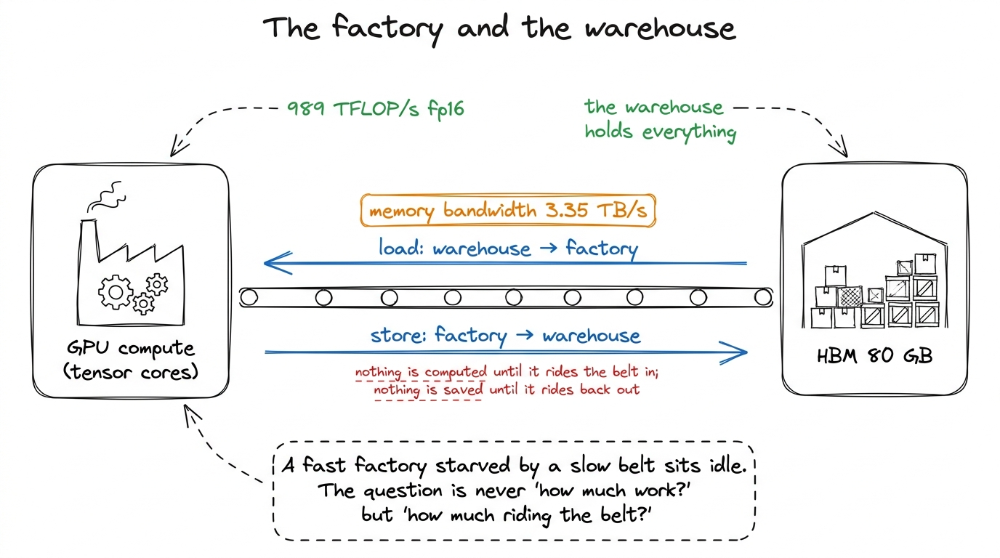
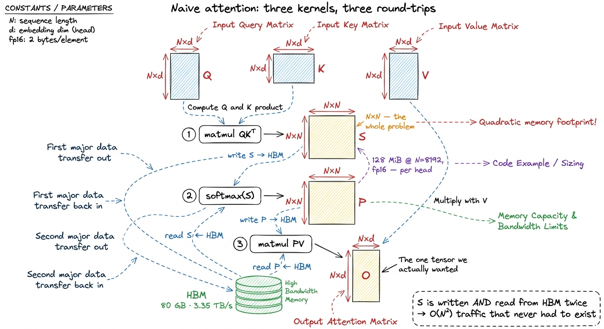
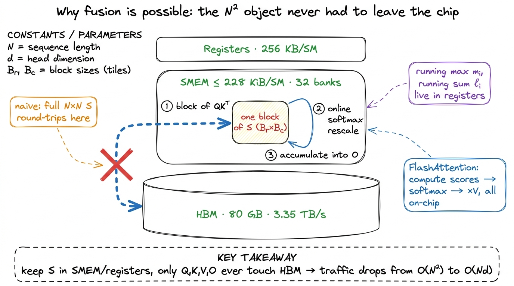

Attention, the naive way
Attention is the operation that made the last decade of language models possible, and it is deceptively simple to write. Given three matrices — queries Q, keys K, and values V, each of shape N × d where N is the sequence length and d the head dimension — self-attention is just softmax(Q Kᵀ / √d) · V. Three lines of math. You can express it in a few lines of PyTorch and it will run and be correct. It will also, for any sequence worth caring about, be embarrassingly slow — and slow for a reason that has nothing to do with the number of floating-point operations it performs.
This is the naive attention kernel of the ladder. Like the naive GEMM, its only job is to give us an honest baseline and a profile to react to. We will write it the way a framework writes it — as three separate operations — watch where the time goes, and let the profiler hand us the motivation for FlashAttention.
The hypothesis
The obvious way to implement attention is to translate the math directly, one operation at a time. Compute the full score matrix. Softmax it. Multiply by V. Each of those is a well-understood kernel we could call from a library, so why not just chain them?
# Q, K, V : (N, d)
S = (Q @ K.transpose(-2, -1)) / math.sqrt(d) # (N, N) scores
P = softmax(S, dim=-1) # (N, N) probabilities
O = P @ V # (N, d) outputThat middle object is the problem. S and P are both N × N. For a modest sequence of N = 8192 in FP16, each is 8192 × 8192 × 2 bytes = 128 MiB — and there is one per attention head, per layer, in the batch. It does not fit in any on-chip memory. It has to live in High-Bandwidth Memory (HBM), the 80 GB of DRAM stacked next to the die. Which means every one of those three kernels has to write its output all the way out to HBM and the next one has to read it all the way back.

figure rendering · Naive attention materializes the full N×N score matrix in HBM, then reThe measurement
Run this and time it, and the surprise is where the time isn't. Point Nsight Compute at the three kernels and the two matmuls — QKᵀ and PV — are healthy. They are real GEMMs with good arithmetic intensity; on an H100 they will happily push a large fraction of the 989 TFLOP/s the tensor cores can deliver.1 These are the two big FLOP contributors: QKᵀ is 2N²d FLOPs and PV is another 2N²d. Everything else — the scale, the exponentials, the row sums — is a rounding error on the FLOP budget. This mirrors the BERT breakdown in Horace He's post, where the non-matmul ops are 0.2% of the FLOPs but nowhere near 0.2% of the time. The softmax kernel, by contrast, lights up red: it is nowhere near compute-bound. It reads N² numbers, does a handful of arithmetic operations per number — a max, a subtract, an exp, a divide — and writes N² numbers back. Its arithmetic intensity is on the order of 1 flop per element, which from the three regimes we know puts it hundreds of times below the H100's ridge point of ~295 FLOPs per byte. It is hopelessly memory-bandwidth-bound.
But the softmax kernel is only the most visible symptom. The real disease is the plumbing between the kernels. Add up the HBM traffic the whole pipeline generates for that N × N score matrix:
QKᵀwritesSto HBM —N²elements.- Softmax reads
Sback —N²elements. (Often two passes: one to find the row max, one to exponentiate and sum. The naive online-free version readsSmore than once.) - Softmax writes
Pto HBM —N²elements. PVreadsPback —N²elements.
That is at least four N² trips across the HBM boundary for a quantity — the score matrix — that the algorithm never actually needed to keep. Q, K, and V together are only 3Nd elements; the output O is Nd. Everything linear in N is cheap. It is the N² intermediate, born and buried in HBM, that dominates the byte budget.

figure rendering · For long sequences the quadratic score matrix, not the FLOPs, sets theThe headline number: on the naive three-kernel path, attention spends the majority of its wall-clock time not computing. The matmuls are efficient, but they are bracketed by a memory-bound softmax and, worse, by the mandatory HBM write-then-read of a matrix that is N² in a world where everything else is N. As sequence length grows, this gets monotonically worse — the compute grows as N²d, but so does the traffic, and the traffic is running against a 3.35 TB/s bandwidth ceiling that the tensor cores can out-produce many times over.2 Concretely: the two matmuls do 4N²d FLOPs. At 989 TFLOP/s that is a compute time of 4N²d / 989e12. The score-matrix traffic alone is roughly 4N²·2 bytes; at 3.35 TB/s that is 8N² / 3.35e12 seconds. Take the ratio and the N² cancels — you are left comparing d-scaled compute against a fixed memory cost, and for the small head dimensions used in practice (d = 64 or 128) the memory term wins.
Why the FLOPs are a red herring
It is worth sitting with this, because it inverts the intuition most people bring from CPUs. The naive attention kernel is not slow because it does too much math. It does exactly the math the algorithm requires — ~4N²d FLOPs — and it does that math on tensor cores that are the fastest math units NVIDIA ships. If FLOPs were the constraint, attention would be nearly free.
It is slow because of a decision buried in the structure of the implementation: the choice to materialize S and P as full tensors in global memory. That choice turns a chain of on-chip-friendly operations into a sequence of HBM round-trips, and HBM round-trips are the single most expensive thing a kernel can do.3 This is the same lesson as operator fusion in the three regimes article — x.cos().cos() costs almost the same as x.cos() because the exponentials are free and the two HBM round-trips are the entire cost. Attention is that lesson at N² scale. We paid for 80 GB of HBM and 3.35 TB/s of bandwidth, and the naive kernel spends that bandwidth shipping a temporary matrix out to DRAM only to immediately ship it back.
There is a structural reason this only gets more painful over time. Each GPU generation adds tensor-core FLOP/s faster than it adds HBM bandwidth, which means the ridge point keeps climbing and memory-bound regions of a kernel keep getting relatively more expensive. Naive attention is, by construction, mostly a memory-movement problem wearing a matmul-shaped hat — exactly the kind of workload that ages badly on new silicon.
What this tells us to do next
The profile hands us the to-do list, and it is short because the diagnosis is so clean. We are memory-bound on the N² intermediate. Per the regime playbook, the fix for memory-bound code is never faster math — it is fewer bytes moved. And the biggest byte savings available is the most obvious one once you see it: never write S and P to HBM at all.
That sounds impossible at first. Softmax needs a whole row of S to normalize — you need the row maximum and the row sum before you can turn any score into a probability, and the whole point of writing S out was that a full row does not fit in registers alongside everything else. Computing the output without ever storing the score matrix seems to require it to be in two places at once.
The resolution is a beautiful trick called the online softmax: a way to compute the softmax-weighted output incrementally, tile by tile, maintaining a running maximum and running sum and rescaling the partial output as new tiles arrive, so that you never need more than a small block of scores resident at once. Combine that with tiling Q, K, and V into shared memory and you can fuse all three kernels into one — computing a block of scores in on-chip memory, softmaxing it there, multiplying by the corresponding block of V, and accumulating into the output, all without a single N² object ever touching HBM.

figure rendering · FlashAttention keeps every N×N quantity on-chip; only the linear-sizedThat is FlashAttention, and it is the whole reason attention is tractable at long context today. We will build it in the next section the same way we build everything here: state the hypothesis, write the smallest kernel that tests it, profile it, and let the measurement — not the math — tell us we won. The naive version we just wrote is the baseline it beats, and now we know precisely which number it has to move: not the FLOPs, which were already fine, but the N² bytes we should never have written down.